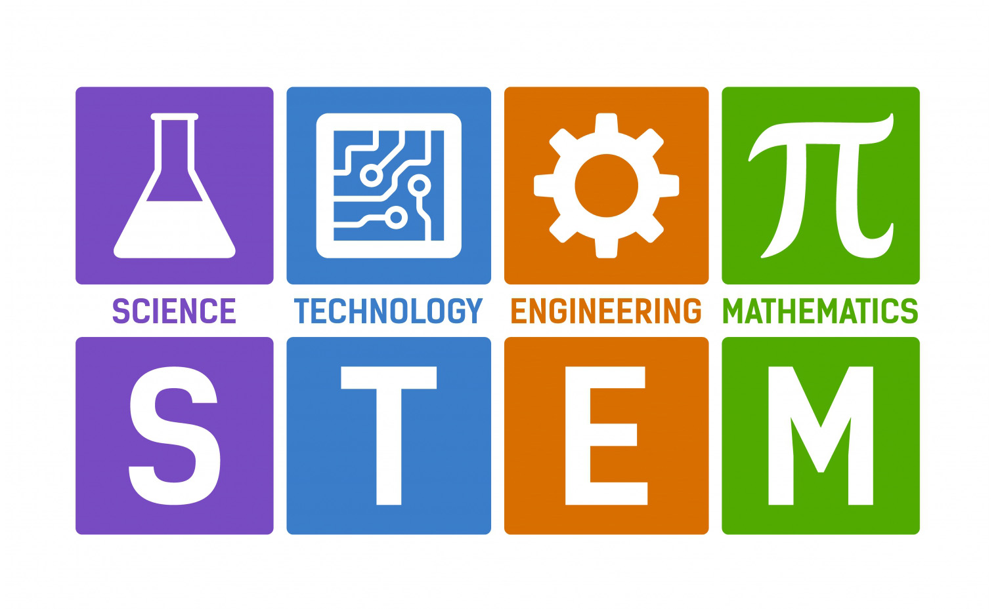

Wat is Stem nu precies?
STEM is een richting die je kunt volgen in de middelbare school en is een afkorting voor Science, Technology, Engineering and Mathematics. Als je een beetje Engels kan zie je meteen wat je met STEM gaat doen, voor zij die niet zo goed in Engels zijn, de letterlijke vertaling is: Wetenschappen, Technologie, Ingenieur en Wiskunde.
Zoals de naam het al zegt, STEM is een richting gebaseerd rond coderen en projecten. Je zult in deze richting dan ook leren programmeren, een onderzoek verrichten en dergelijken.
STEM is een redelijk nieuwe richting maar word wel al op best veel Vlaamse scholen als optie gegeven. Voor de mensen die nog moeten kiezen wat ze willen gaan doen, neem zeker bij scholen die STEM aanbieden en doe een keer mee met een opendeurdag. Misschien is STEM wel iets voor jou.
Waarom zou je voor STEM moeten kiezen?
In mijn mening zou iedereen voor STEM moeten kiezen want ikzelf vind deze richting perfect, maar wat zijn zoal redenen waarom jij voor STEM zou kunnen kiezen.
Er zijn genoeg redenen tegenwoordig om voor een opleiding zoals STEM te kiezen, omdat steeds meer van de wereld digitaal word is het bij de meeste jobs vandaag de dag handig als je wat ervaring hebt met coderen.
Dus ook al zie je jezelf later niet iets doen in de ICT of Software Engineering dan kan deze richting alsnog een goede keuze zijn.
Je leert hier omgaan met computers en komt erachter hoe computers precies werken en leert te communiceren met computers aan de hand van code.
Ook zul je leren hoe je succesvol een wetenschappenlijk onderzoek kan opzetten, dit is ook een goeie voorbereiding voor je latere eindwerk omdat je leert hoe je een paper moet schrijven en aan de slag moet gaan om informatie op te zoeken.